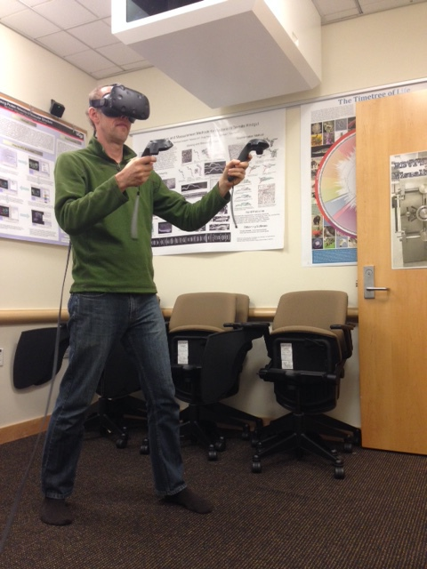
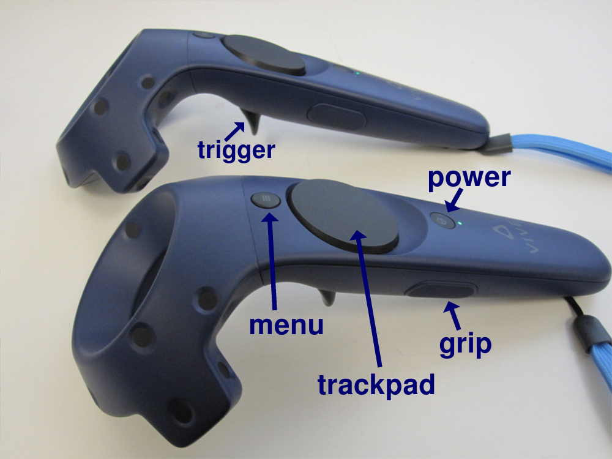
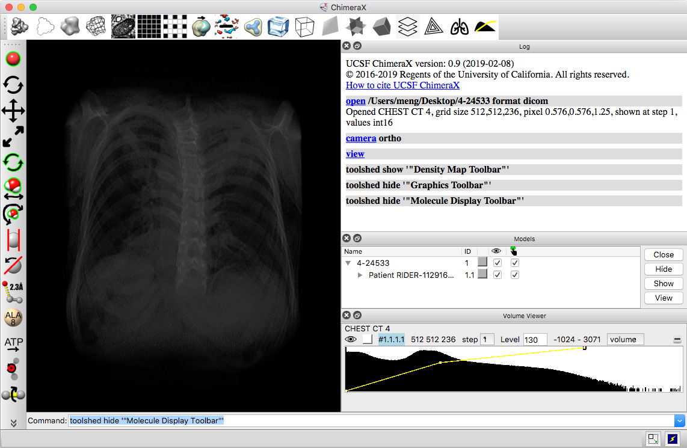
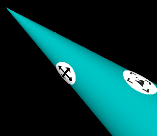
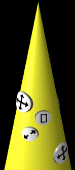
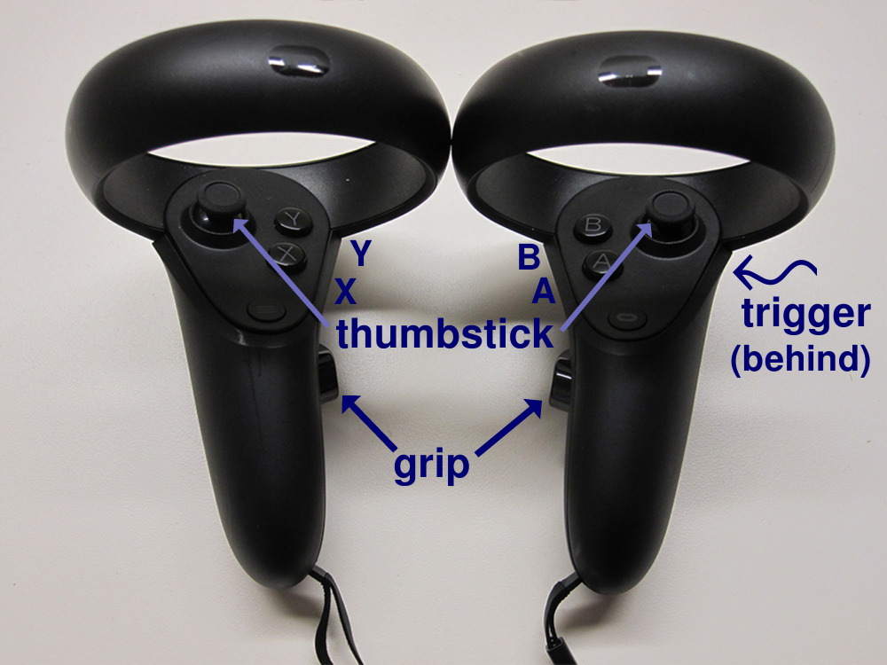

| Warning: ChimeraX virtual reality (VR) capabilities are a work in progress. We recommend using Windows 10 where VR equipment works best. It is possible to use on Mac and Linux but less stable, see details for Mac VR, Linux VR. |
|  |
ChimeraX allows display and analysis of structures and density maps using virtual reality headsets such as HTC Vive, Vive Pro, Oculus Rift, Samsung Odyssey and Windows Mixed Reality. For multi-person VR sessions, see the meeting command and Meeting tool. To add buttons for easy command execution from within VR, see buttonpanel. ChimeraX can also record 360° movies.
See also:
Molecular visualization on the holodeck.
Goddard TD, Brilliant AA, Skillman TL, Vergenz S, Tyrwhitt-Drake J, Meng EC, Ferrin TE.
J Mol Biol. 2018 Oct 19;430(21):3982-3996.
|  |
| Vive hand controllers |
Any models displayed in ChimeraX can be shown in virtual reality headsets supported by SteamVR, such as HTC Vive, Oculus Rift and Samsung Odyssey. Most descriptions here are for Vive hand controllers, but other systems have hand-controller buttons that are generally similar in position and function.
Vive controllers each have a trigger to “pull” with the index finger, a grip button on the side, and a larger round trackpad on the top surface that can be pressed with the thumb. Above the trackpad is a smaller menu button marked with horizontal lines, and below it is a power button and a green light indicating when the controller is turned on.
|  |
| The SteamVR status window shows icons for the goggles, two controllers, and two base stations in green when they are detected as ready for use. |
open 2gbp
vr on
Models in ChimeraX should then appear in the VR headset. The hand-controller positions are shown in the headset as cones, and icons on the cones indicate button functions or modes. Default assignments:
| rotate
|
rotate hand controller with trigger pressed |

The icon on the cone “underside” shows that the Vive trigger is assigned to translation (and rotation), and the icon on the side shows that the grip button is assigned to center and rescale.  For Oculus (vs. Vive), the icons are arranged differently on the cones to reflect the different physical positions of the buttons on the controllers. |
| translate in 3D
|
move hand controller with trigger pressed | |
| zoom
|
move hand controllers farther apart or closer
together with both triggers pressed
– or – move hand controller vertically with Vive trackpad pressed (Oculus A button) |
|
| center and rescale
|
Vive grip button (Oculus X button) | |
|
collectively show, hide, move tool panels
(a panel can be moved individually by click-dragging with any button on its title bar, or on a blank area in the panel if no title bar) |
Vive menu button (Oculus B/Y button) |
|  |
| Oculus “Touch” hand controllers |
Showing ChimeraX tool panels including the Toolbar with the menu (or B/Y) button allows “clicking” icons to adjust the display and reassign button functions. In Windows only, the ChimeraX main menu is among the tool panels shown.
The physical room bounds are shown with blue squares when the headset or a hand controller comes close to a physical wall (within about a meter). Models can be scaled to sizes larger than the physical room.
To turn off rendering in the VR headset and re-enable rendering on the desktop display, use the ChimeraX command:
vr off
VR status, model positions in the room, and hand-controller button assignments are saved in ChimeraX session files. The VR model positions and button assignments are also retained through uses of vr on and vr off, but not after exiting ChimeraX.
Most of the ChimeraX “mouse” modes (function assignments) can be used with the VR hand controllers. Functions are described in more detail in the mouse mode documentation, but include:
Some of the modes behave differently in VR as compared to in the desktop view.
Modes that require clicking on an atom such as selection or labeling require pointing at the atom with the hand-controller cone. This is easiest to do at close range; by default, the clicked object must be within 10 cm of the cone tip. Allowing a larger distance can work, but requires accurate pointing. Modes that involve dragging on the desktop such as changing the contour level of a map are operated by clicking and moving the hand controller vertically. The bond-rotation mouse mode operates by dragging on the desktop, but in VR operates by rotating the hand controller. Translation and rotation are separate mouse modes on the desktop but a single hand-controller mode in VR.
The function of a hand-controller button can be reassigned by using it to “click” an icon in the following tabs of the Toolbar:
Headset display of the Toolbar and other ChimeraX tool panels can be toggled with the the Vive menu button or Oculus B/Y button.
Putting the tip of a hand controller cone on a mode-assignment icon
and clicking with the Vive
trigger, trackpad, or grip button
(or Oculus trigger, grip, A, X, or
thumbstick) reassigns that button to the function;
the icon will pop up slightly when the cone tip is in position to click it.
Hand-controller modes can also be assigned with the command
vr button.
However, the only modes that can be controlled by tilting the Oculus
thumbstick are rotate
 ,
zoom
,
zoom
 ,
contour level
,
contour level
 ,
play map series
,
play map series
 ,
and play trajectory
,
and play trajectory
 .
.
With N assignable buttons on each controller, up to 2N modes
can be assigned. However, leaving the triggers with their
default assignments
(rotation, translation, zooming) is recommended to allow manipulation
as described above.
If a trigger is accidentally reassigned, using it to click
either the rotate
 or translate
or translate
 mode icon returns it to the default behavior.
mode icon returns it to the default behavior.
Several other Toolbar icons (besides those for mode assignment) may also be useful in virtual reality:
Headset display of the Toolbar and other ChimeraX tool panels can be toggled with the the Vive menu button or Oculus B/Y button.
An icon will pop up slightly when the cone tip is in position to click it. The scope of action of some of the icons can be specified/limited by selection.
For desired actions not already available as icons, custom panels of buttons to execute commands can be defined with the buttonpanel command.
Motion sickness warning: If the model is stuttering or flickering in the headset (due to insufficient rendering speed), then you should stop viewing it, as this can easily and suddenly induce nausea that could last as long as 24 hours. Even without the stuttering, if you feel any motion sickness, stop using the headset. Progression from slight nausea to needing to throw up can happen quickly.
Operating systems. We have tested ChimeraX VR on Windows 10 with an Nvidia Geforce GTX 1080 graphics card and with an AMD Radeon RX 480 graphics card. As of November 2018, SteamVR works well on Windows on Windows 10, has some support on macOS High Sierra and Mojave, and can work on Linux.
Small models only. Large molecular structures (more than a few thousand atoms) render too slowly and will cause stuttering in the headset. Large density map surfaces also cause stuttering; a 2003 map at full resolution should work, but larger sizes may require subsampling (step 2). Current headsets render at 90 frames per second in two eyes, so the effective rendering speed needed to avoid flickering is about 200 frames per second. By comparison, a rendering speed of 10 frames per second is adequate on a conventional desktop display.
Simple lighting. By default ChimeraX switches to simple lighting when VR is enabled – other lighting modes render too slowly and cause stuttering.
Desktop rendering. The ChimeraX graphics on your normal computer display will show what the user sees in the VR headset. Rendering to the conventional display (generally 60 frames per second) can slow the VR rendering if ChimeraX is not able to switch to a mode where graphics is not synchronized to vertical refresh. To test if this is the cause of stuttering you can use the vr command option display blank to prevent graphics from updating on the desktop display. An alternative mirroring can be done by the SteamVR runtime using SteamVR menu entry “Mirror Display.”
Side View should be closed. The ChimeraX Side View tool will slow headset rendering and cause stuttering, so it should be closed during VR viewing.
Blackout. Modes that perform calculations taking longer than 1/90th second cause the graphics not to update, and the VR scene will gray out after a fraction of a second without graphics updates. Changing map contour level and running molecular dynamics are prone to this problem. In the future these calculations will be done in parallel so the graphics will not be slowed down.
Flickering labels. Atom or residue labels can cause scene flicker because labels are slow to render. To make this less likely, the frequency of label reoriention is automatically decreased when VR is enabled.
Selection outlines. Green selection outlines can slow rendering and cause flicker.
Clipping when models far away. If models are scaled to a very large size, parts more than 500 meters away (in physical room dimensions) will be clipped. This may seem like a large distance, but as a model is scaled up it may appear to stop increasing in size because stereoscopic depth perception is not effective beyond about 10 meters. As parts of the model get both larger and farther away at the same rate, the change in size is not evident. To gauge model size, it can be useful to move a hand controller near a physical wall so that the blue mesh will provide a reference distance.
Dynamic scenes may render too slowly. Dynamic (time-varying) scenes are more interesting to view than static scenes. We have successfully displayed 3D optical microscopy time series of crawling cells using the command vseries play with the cacheFrames option so that all surface depictions are precomputed; without that option, the VR headset rendering is too slow. It may also help to change the scene at a slower pace, for example using vseries play with the maxFrameRate option. A molecular dynamics trajectories can be played with the coordset command. Use the coordset pauseFrames 9 option to slow the playback rate from the 90 frames per second of the headset to 10 frames per second.
SteamVR room boundaries wrong. Sometimes tracing room boundaries using room-scale room setup in SteamVR produces incorrect results (November 2018). We have observed this when the traced space is not a simple rectangle because of a desk against one wall. Tracing around the desk joins the 6 corners of the bounds in the wrong order – a different order than they were traced. It is unclear what is wrong with the SteamVR room setup algorithm, but we have found that clicking the room tracing "Advanced Mode" checkbutton which allows you to click at each corner of the room reliably produces the correct SteamVR bounds.
{kind=link}
{kind=link}
{kind=link}
{kind=link}
{kind=link}
{kind=link}